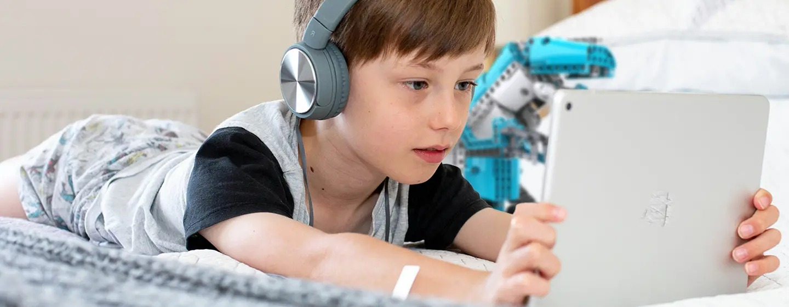
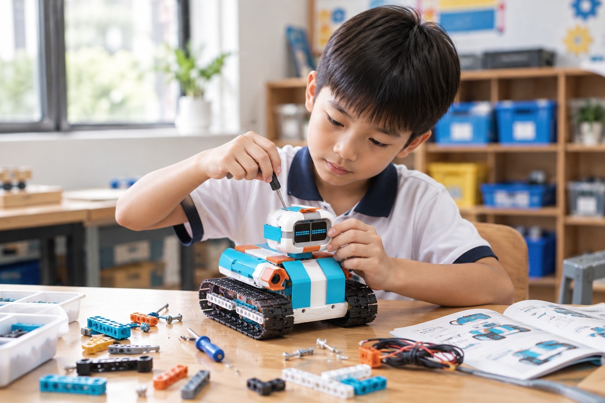
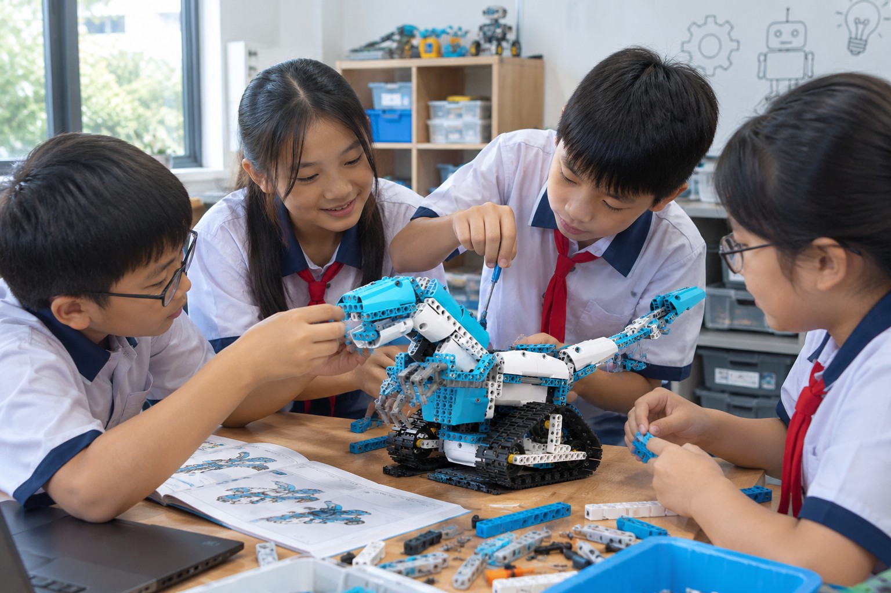
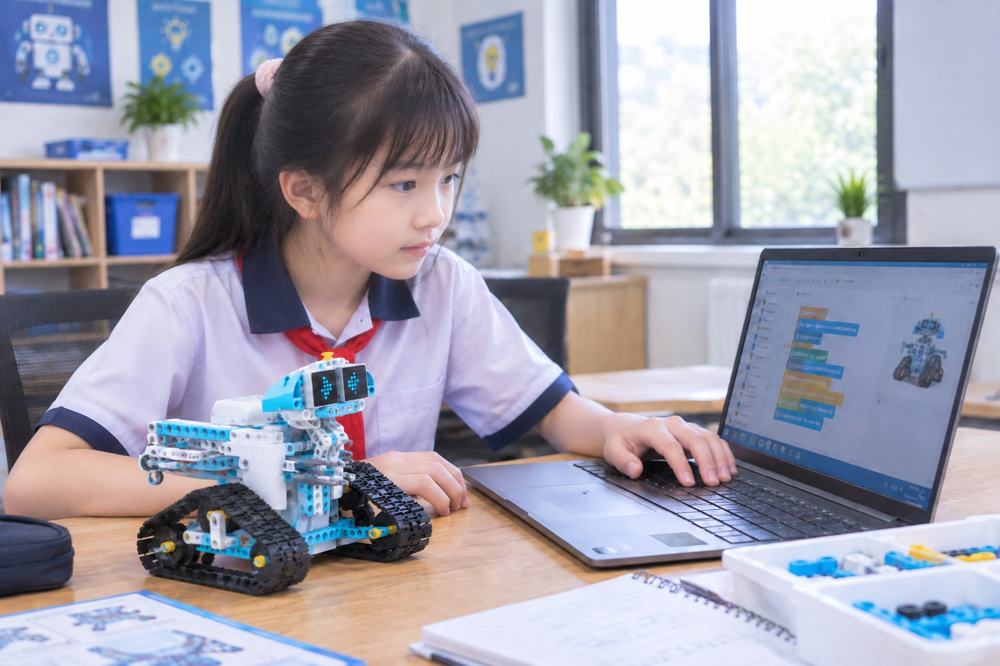
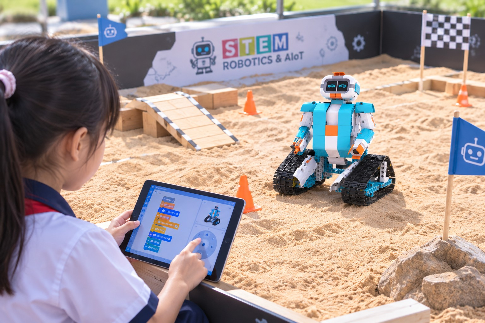

Young Maker
Nhà Sáng Chế Nhí
Nơi trẻ bắt đầu hành trình trở thành kỹ sư nhí.
Young Maker dành cho học sinh 8–10 tuổi, giúp các em bước vào thế giới Robotics qua lắp ráp thực hành và lập trình kéo-thả với bộ kit WhalesBot AI Module 1S. Các em khám phá cách robot chuyển động bằng motor, bánh răng, rồi học cách dùng cảm biến để robot nhận biết môi trường xung quanh.
🛠️ Cơ khí → Cảm biến → Tự động hóa → Tự thiết kế giải pháp. Qua từng dự án, học sinh phát triển tư duy logic, tư duy kỹ thuật và khả năng giải quyết vấn đề như một kỹ sư nhí thực thụ.

20 buổi học – 4 Module chinh phục
"Từ những cơ cấu cơ khí đầu tiên đến khả năng tự thiết kế giải pháp Robotics – mỗi buổi học là một bước tiến trên hành trình trở thành kỹ sư nhí."
Khám phá cách robot được tạo nên từ cơ khí, chuyển động và lập trình
Học sinh bắt đầu làm quen với WhalesBot AI Module 1S, tìm hiểu vai trò của motor, bánh răng và các cơ cấu truyền động trong một sản phẩm robot. Thông qua việc trực tiếp lắp ráp và lập trình, các em hiểu được cách một chuyển động đơn giản có thể được tạo thành từ nhiều bộ phận cơ khí kết hợp với nhau.
Học sinh cũng bắt đầu làm quen với lập trình kéo-thả, xây dựng các chuỗi lệnh để điều khiển robot hoạt động theo trình tự mong muốn.

Dạy robot biết cảm nhận môi trường và phản ứng với những gì xảy ra xung quanh
Sau khi hiểu cách robot chuyển động, học sinh bắt đầu khám phá cảm biến – "giác quan" giúp robot nhận biết thế giới bên ngoài.
Các em tìm hiểu cách sử dụng Infrared Sensor và Touch Sensor, đọc tín hiệu từ môi trường và lập trình để robot đưa ra phản ứng phù hợp. Từ đây, học sinh bắt đầu chuyển từ việc điều khiển robot bằng lệnh cố định sang xây dựng những robot có thể cảm nhận và phản ứng.
Ví dụ, khi robot phát hiện vật thể hoặc nhận được tín hiệu từ cảm biến, chương trình có thể yêu cầu robot dừng lại, thay đổi chuyển động hoặc thực hiện một hành động khác.

Kết hợp cảm biến, lập trình và cơ cấu để robot tự đưa ra phản ứng
Ở module này, học sinh tiến thêm một bước từ "robot biết cảm nhận" sang "robot biết xử lý thông tin và thực hiện nhiệm vụ".
Các em học cách sử dụng điều kiện, phép so sánh, tốc độ, góc quay và thời gian hoạt động của motor để tạo ra những hành vi phức tạp hơn cho robot.
Thông qua các mô hình cơ khí và tự động hóa, học sinh hiểu được một nguyên lý quan trọng của Robotics: Robot nhận thông tin → chương trình xử lý → robot thực hiện hành động. Đây là nền tảng để học sinh tiếp tục phát triển lên Autonomous Robotics và các chương trình Robotics nâng cao.

Từ làm theo hướng dẫn đến tự thiết kế giải pháp cho một bài toán Robotics
Module cuối là nơi học sinh kết hợp những kiến thức đã học để giải quyết các nhiệm vụ thực tế. Thay vì chỉ lắp ráp theo từng bước, các em bắt đầu suy nghĩ như một Maker trẻ: Robot cần làm gì? Robot cần sử dụng bộ phận nào? Cảm biến nào giúp robot nhận biết tình huống? Chương trình cần đưa ra quyết định như thế nào? Làm thế nào để cải thiện robot khi sản phẩm chưa hoạt động đúng?
Học sinh được trải nghiệm quy trình: Build → Code → Test → Fix → Improve. Qua đó hình thành tư duy thiết kế, thử nghiệm và giải quyết vấn đề.

Sau 20 buổi học, học viên sẽ:
- ⚙️Hiểu cách motor, bánh răng và cơ cấu truyền động tạo nên chuyển động của robot.
- 👁️Sử dụng Infrared Sensor và Touch Sensor để robot nhận biết môi trường.
- 🧠Lập trình điều kiện, phép so sánh, tốc độ và góc quay động cơ cho các hành vi phức tạp.
- 🤖Hoàn thành 13+ dự án Robotics từ cơ khí đến tự động hóa.
- 🏆Tự thiết kế, lắp ráp và lập trình giải pháp cho một bài toán Robotics thực tế.
- 🔁Thành thạo quy trình Build → Code → Test → Fix → Improve.
- 🎤Tự tin trình bày sản phẩm Robotics của riêng mình.
Con sẽ đạt được gì sau khóa học?
-
⚙️
Tự tay lắp ráp robot cơ khí đầu tiên
Con hiểu cách motor, bánh răng và cơ cấu truyền động phối hợp tạo nên chuyển động.
-
👁️
Robot biết cảm nhận môi trường
Dùng cảm biến hồng ngoại & cảm ứng để robot phản ứng với những gì xảy ra xung quanh.
-
🧠
Tư duy logic & tự động hóa
Kết hợp điều kiện, so sánh, tốc độ và thời gian để robot tự ra quyết định.
-
🏆
Tự thiết kế giải pháp Robotics
Trải qua quy trình Build → Code → Test → Fix → Improve như một Maker trẻ thực thụ.
Học qua những dự án robot thực tế
Cơ cấu bánh răng & truyền động
Cảm biến hồng ngoại & phản ứng
Điều kiện, so sánh & tốc độ motor
Cổng tự động nhận biết & đóng mở
Máy bán hàng tự động
Grayscale Sensor & dò line